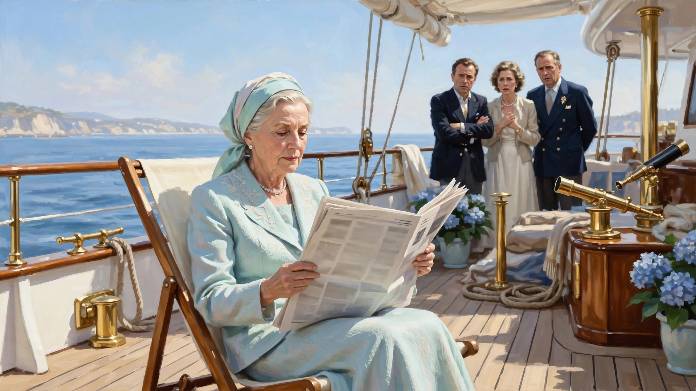
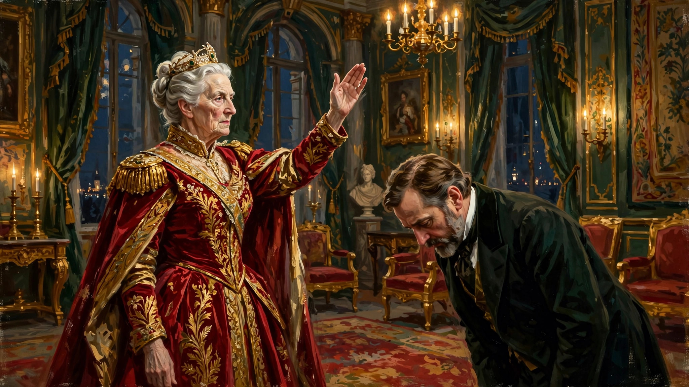

古老“吉祥物”的代价
欢迎点击上方名片关注我，您的支持是我坚持 原创的最大动力。
《王冠》这部英剧我陆续追到第五季了，一直很喜欢这个剧集。也一直想写写这个剧，但总没机会，更主要是对于体量庞大的多季剧集往往觉得无从下手。昨天刚看完第五季第一集，就从这一集一个小切片聊起吧。
（以后对于多季剧集可能更多采取类似方式，找出喜欢的单集聊聊，而不是笼统地聊整部剧。这样比较容易聊，读者也更好消化）
（以下剧透警告）
这一集通过两件小事探讨了英国公众对英国王室这一古老机构的一些看法和心态上的微妙变化，反映了部分现实，也让我等非君主立宪制国家的观众对当代英国王室的状况有了更进一步的了解。
在讲这两件事之前，首先要说的是，这部剧集虽然很大程度上复刻了现实中的英国王室，但毕竟是艺术创作为主的剧集片而非纪录片，肯定有虚构的成分。所以不必太纠结事实的一一对应。况且当事人英国王室和英国政府都没有对这部剧说三道四（起码这部剧播出了这么多季，还获得了不错的收视和口碑），我们这些吃瓜观众就更应该抱有娱乐心态了。
本集的开端就是英女王伊丽莎白二世一家在皇家游艇上度假。女王每天有读报的习惯，但今天的《星期日泰晤士报》刊登了一篇女王看了会很不高兴的文章，大意是讲英女王在位太久，与时代脱节，还是早点让贤的好，诸如此类。女王身边的幕僚们看到这篇文章当然大为震惊和光火，这文章的观点简直“大逆不道”，让女王看到还得了。于是他们很默契地把报纸藏了起来避免让女王看到。女王问了几次今天的报纸怎么还没来，大家都集体装傻。

直到女王从游艇上岸到皇家城堡，大家对此事还是讳莫如深。精明的女王看出了端倪，她对助理一再追问，终于知道了实情。当然马上找来报纸看了。但看完就看完了，女王并未发表什么看法，也没表露出任何情绪。
与此同时，储君威尔士亲王查尔斯（也就是当今英国的查尔斯国王）对此事却反应很积极。他看到同一篇文章后眼睛放光，似乎等这一天很久了。也难怪，谁让他母亲伊丽莎白二世“身体倍棒，吃嘛嘛香”呢。可苦了他了，当了这么多年的太子还是一眼望不到头，空有一身“抱负”。他从这篇文章里看到了暗流涌动，觉得机会难得。于是他也顾不上亲王的矜持了，马上找个借口结束和戴安娜和孩子的旅行，回国去见梅杰首相。

查尔斯约见首相当然找的是冠冕堂皇的其他公事理由，不会上来就挑明来意。见面寒暄几句，讲了些鸡毛蒜皮的事情后，查尔斯话锋一转，向首相提及报上那篇引起轩然大波的文章。梅杰也是个老狐狸，不见鬼子不拉弦。你说你的，我就听着，看你表演，主打一个不表态。查尔斯只得一步步把话挑明，委婉地表示自己希望有机会早点上位，一展抱负。梅杰那边依然玩深沉不表态（估计心说，这是你们娘俩的家务事，我才不傻傻为你钻烟囱呢）。查尔斯很失望，只好一本正经地转向其他话题。看来指望政府方面支持他晕条路行不通。
这件事就在女王的若无其事冷处理和亲王的空欢喜一场中无果而终。接下来在女王和首相之间又发生了一场短暂的交锋，但这次和前面的文章无关，而是围绕女王的皇家游艇。
女王召见首相，却不是为了文章的事。她先展示亲切的一面，和首相聊了几句家常话。然后很客气地向首相提出了一个“请求”（甚至用了“on bended knees"（跪求）这么夸张的表达），希望由政府来负担维修皇家游艇的费用。看到这里，我都差点为女王心酸地滴出眼泪了。英女王再怎么摆设，再怎么吉祥物，好歹名义上也是国家元首吧，竟然这么卑微地求自己的臣子（虽然也是名义上的）这么小的一件事。
本来还畏畏缩缩的梅杰首相一看女王这貌似卑微的态度，马上来了底气，开始了一段“地主家里也没有余粮”的叙事。说现在经济低迷，政府的每笔支出人民可都盯着紧紧的。您这游艇再咋说在老百姓眼里也是奢侈品，用纳税人的钱恐怕不太合适吧。这还不说，梅杰首相还提到前任首相撒切尔夫人在任期间给王室还慷慨地拨过一笔款子云云。
女王见来软的不行，心说老娘不装了。马上端出了君主的威严。换上强硬口气，说皇家游艇是王室形象的代表，代表了王室的延续性(continuity)，blahblah。换句话说，这不是请求，是命令。叫你办你就去办好了，哪那么多废话。梅杰首相也真有出息，一见女王动真格的，还真就（硬刚——不是）马上服软了（至于是不是真的照办那就不知道了，看后续会不会交代）。
这场所谓的交锋就一个回合就结束了，说实话看着有点泄气。同时让我一头问号。说好的君主立宪制，君主不干政，首相不听命于君主呢？怎么没落的英王室君主伊丽莎白二世还可以像使唤家奴一样使唤首相呢？看来（至少从剧中看来）英国君主的权力和影响力比一般人想象的君主立宪制下名义元首的要大一些。（想到这里咱中国人还真后怕哩，幸亏大清亡得早哇，否则还真不知搞出君主立宪的爱新觉罗氏会出啥幺蛾子呢。）
本集结尾时，梅杰首相和妻子的一段对话意味深长。摘录如下并附译文：
Norma Major: What's the matter?
John Major: When you imaging the problems you might be confronted with as prime minister, you imagine...tricky sessions at PMQs. The economy is in free fall. Going to war. You never imagine this.
The House of Windsor should be binding the nation together. Setting an example of idealized family life.
Instead, the senior royals seem dangerously deluded and out of touch. The junior royals, feckless, entitled, and lost. And the Prince of Wales, impatient for a great role in public life, not realizing his great role is to support the Queen. It's a situation that cannot help but to affect the stability of the country. What makes it worse is it feels it's all about to erupt...on my watch.
诺玛·梅杰： 怎么了？
约翰·梅杰： 当你想象作为首相可能会面临的各种问题时，你会想到……首相质询时棘手的场面。经济自由落体。打仗。你永远不会想到这种事。温莎王室本应把国家凝聚在一起，为国民树立理想化家庭生活的典范。结果呢，高级王室成员显得危险地自欺欺人、与时代脱节。而年轻一代的王室成员又无能、特权意识强、迷失方向。还有威尔士亲王，急不可耐地想要在公共生活中扮演重要角色，却没有意识到他最重要的角色是支持女王。这种局面不可避免地会影响国家的稳定。更糟糕的是，我感觉这一切马上就要爆发了……而偏偏发生在我任期内。
剧中梅杰的这番话对本集的两个事件作出了客观评价（虽然现实中的梅杰强烈否认讲过类似的话），失望、无奈之情溢于言表。的确，即使没看过这部剧集，稍微关注国际时事和英国新闻的人也大致了解英国王室近些年丑闻、争议不断。远如戴安娜王妃之死，近如安德鲁王子丑闻，都一再刷新英国及世界公众的认知。所以，我一直以来都有个疑惑，英国王室这种昂贵的“吉祥物”般的存在，直到现在还能存在的合理性在哪里？
带着这个疑问，我和AI聊了聊，AI提供的信息让我更惊讶了。时至今日，英国的主流民意仍然是支持王室继续存在的。虽然近年来在年轻人中这种支持率有明显下降的趋势，但这种支持整体上仍强劲（例如女王在位后期民调显示70-80%以上支持）。这种主流民意的背后是许多人视王室为国家象征、旅游资产、统一力量和传统代表。
我们都知道，英国曾经是世界唯一的“日不落帝国”。虽然近些年明显没落，甚至在中美这两个超级大国面前显得没啥存在感。但从英国民意对王室的坚定支持来看，英国还算家底雄厚的。毕竟纳税人愿意支撑且能够支撑这么能折腾能花钱的王室。看过王冠这部剧就知道英国王室的生活大概是个什么样子：除了参加一些外交访问和公众活动，王室成员的日常就是各种奢侈娱乐：出海钓鱼，进山打猎，出则游艇观光，入则城堡舞会。不管世界政治经济格局如何，他们始终过着世外桃源一样超脱、潇洒和富足的生活。而英国的主流民意居然到现在还觉得这一切都OK，甚至支持！
当然剧集有很大的艺术创作成分，以上只是我作为《王冠》这部剧集观众的一些直接想法。对于真实的英国历史和现状以及英国王室，其实我是一无所知的。如果读者中有朋友熟悉这个话题，欢迎留言评论，给我和有兴趣的朋友科普一下。